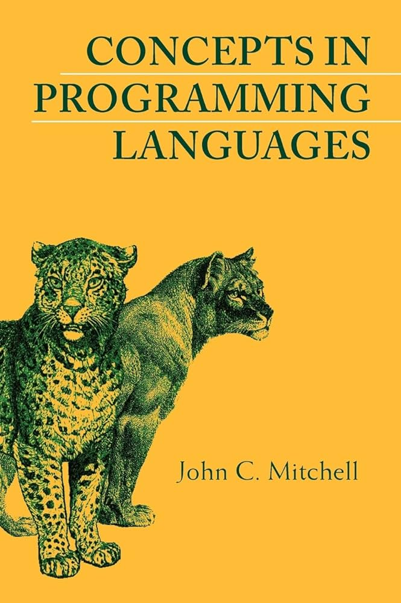
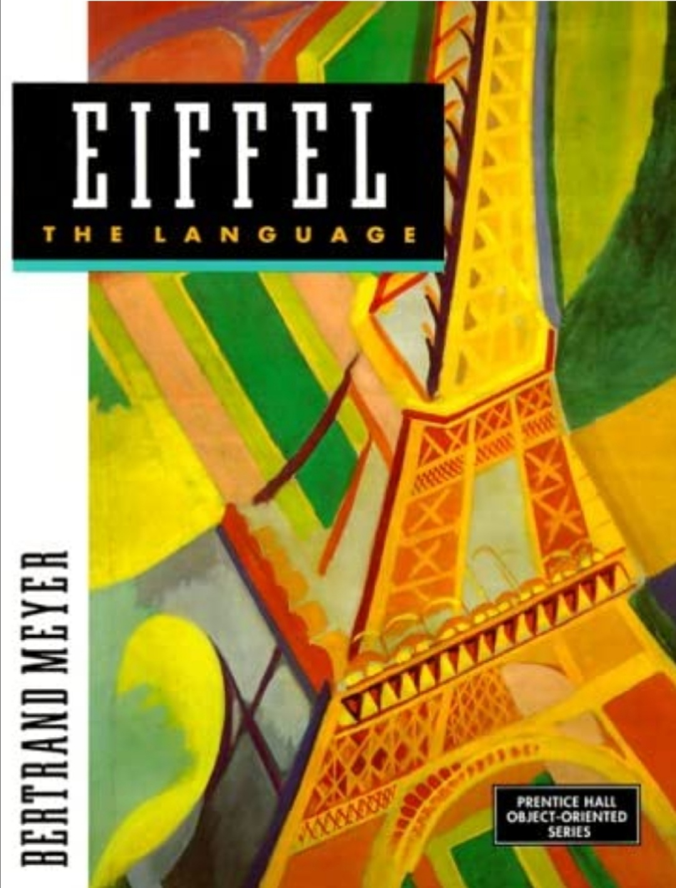
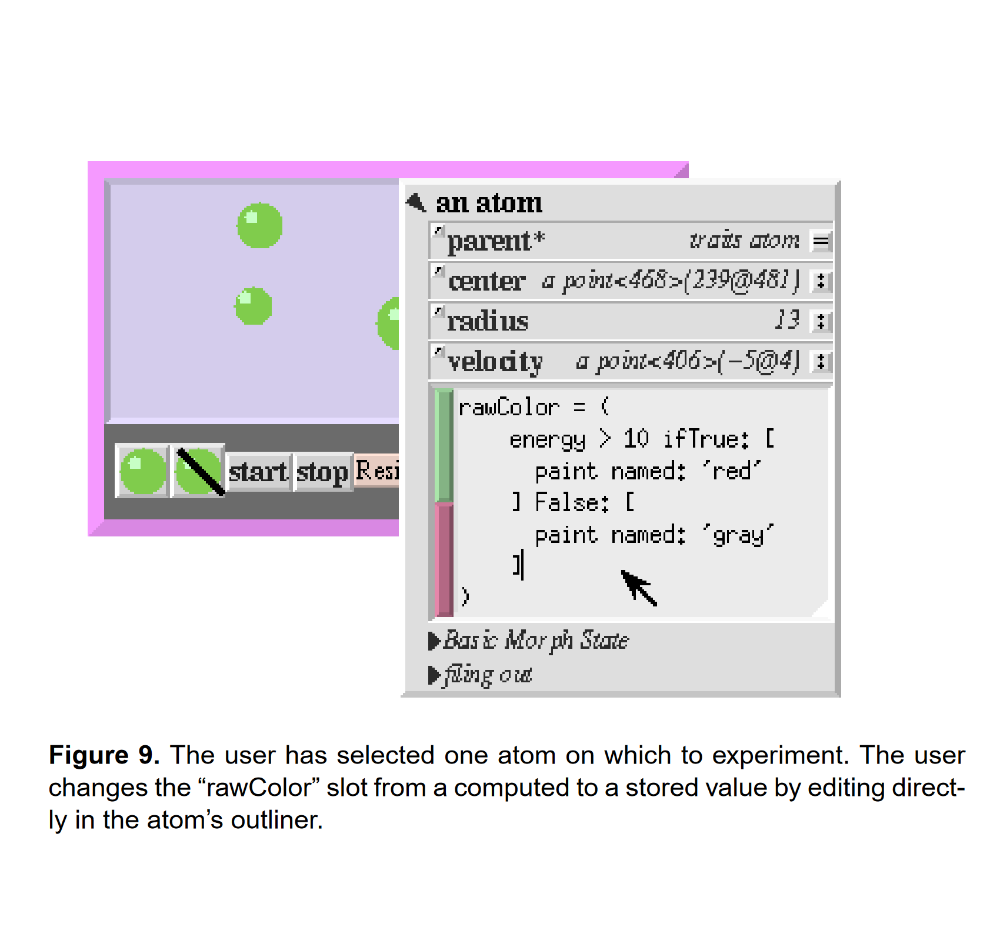
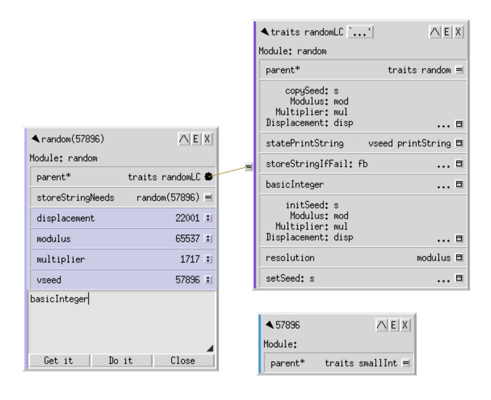
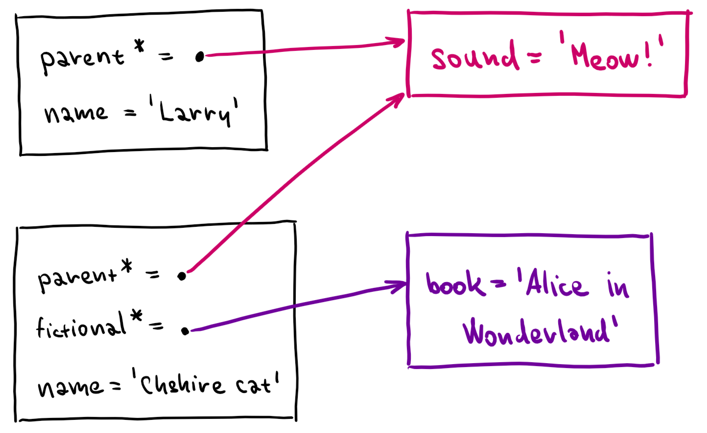
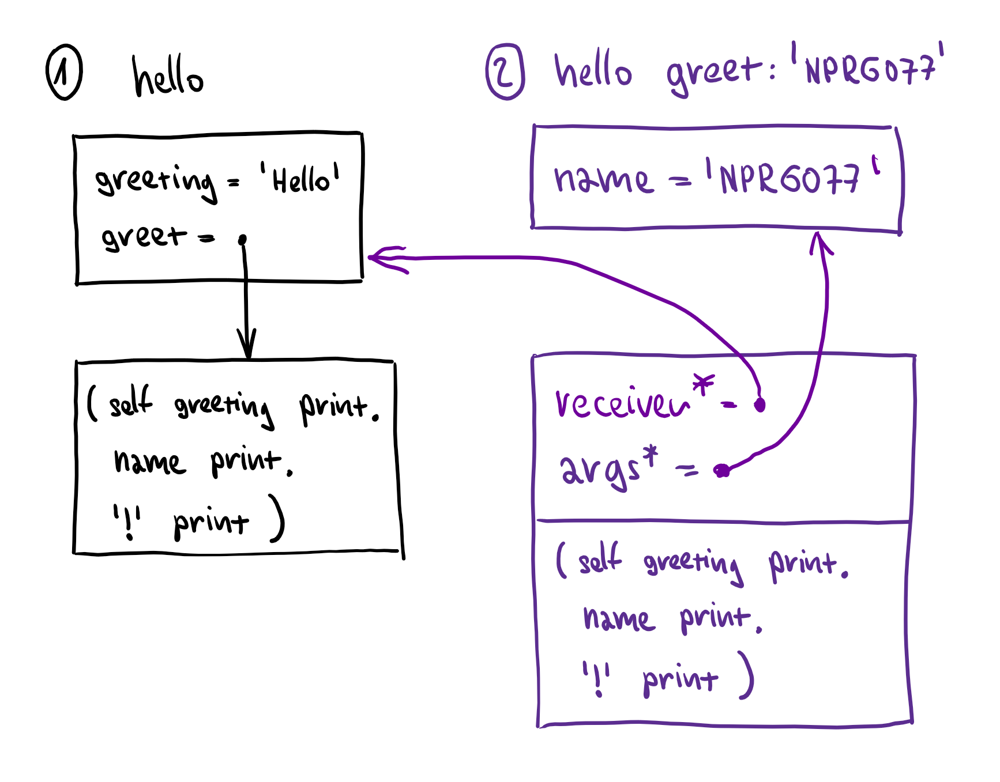

TinySelf: Tiny object-oriented language
History and foundations
Tomas Petricek, Charles University
tomas@tomasp.net
@tomasp.net
https://tomasp.net
https://d3s.mff.cuni.cz/teaching/nprg077

Object-orientation
Dynamic lookup - object chooses how to respond
Abstraction - object state can be hidden from user
Subtyping - any compatible object can be used
Inheritance - reuse to implement a new object
Brief history
1960s-70s

Algol-based and scientific Simula
Tools for thought and messaging in Smalltalk
1980s

Rigorous Eiffel and "serious" C++
Prototypes and materialized objects in Self
1990s-2000s

Class-based safe Java and C#
Prototypes in JavaScript and typed TypeScript
Why TinySelf?

"Pure" object-orientation
- Simple, uniform system
- Everything is an object (for real)
- Simpler than class-based Smalltalk
Shows the potential of objects
- Not Java-style organization of code
- Objects for code, state and execution!
- Objects with introspection and debugging!
- Objects and graphical interfaces!

Self & Morphic user interface framework
Visual programming
Programming by graphically manipulating objects on screen
Direct programming
Objects on screen are objects in the system
Demo
(Not so) Tiny Smalltalk
TinySelf
Scope of the implementation
- Prototype-based multiple inheritance
- Explaining basic runtime structures
- Methods with simple interpreted code
- Inaccurate interpreter in "Self style"
TinySelf: Tiny object-oriented language
Using the Self programming system
Tomas Petricek, Charles University
tomas@tomasp.net
@tomasp.net
https://tomasp.net
https://d3s.mff.cuni.cz/teaching/nprg077
Everything is an object
Really everything
Objects, methods, lambdas,
expressions, activation records
What is an object
Object has a list of slots and
optionally contains code
Object = slots* + code?
- Data object has just slots
- Method object has code
- Closure has code and slots!
- Data object has methods as slots
// Object consists of zero or more
// slots and optionally code
type Objekt =
{ mutable Code : Objekt option
mutable Slots : Slot list }
// A slot has name and contents;
// Some slots are parents
and Slot =
{ Name : string
Contents : Objekt
IsParent : bool }
TinySelf objects
Object consists of zero or more slots and optional code!
In Self parent slot names end with *
TinySelf objects can
also be special things



Prototypes and slots
Message send looks at target object first, then searches parents
cheshire name // OK
cheshire book // OK
larry name // OK
larry book // Fail
Message send fail if none or multiple slots found
Demo
Representing cats in Self
"""Data object with name"""
(| book = 'Alice in Wonderland' |)
"""Method with some code"""
( self name printLine )
"""Data object with parent
slot and a 'speak' method"""
(| parent* = cat
name = 'Cheshire Cat'
speak = (
self sound printLine
)
|)
"""Data access or method call"""
cheshire name
cheshire speak
Message sending
Lookup slot with a matching name, then:
- If it contains data object, it is returned
- If it contains method, the method is called
Assignment slots and special calls differ...
Demo
Hello world and traits
The power of simplicity...

Simplicity and uniformity
- All objects can be opened!
- Activation records for debugging
- Self-sustainable system
Morphic framework
- Things on screen are objects!
- Object with a morph prototype can draw itself
- User interface is just morphs - no special code!
Demo
Morphic and graphical objects
TinySelf: Tiny object-oriented language
Working with mutable data in F#
Tomas Petricek, Charles University
tomas@tomasp.net
@tomasp.net
https://tomasp.net
https://d3s.mff.cuni.cz/teaching/nprg077
Mutable records in F#

Defining mutable objects
- Records with
mutablefields - We could use classes too
Equality and records
- Still use structural equality by default
- Not if records (can) contain functions!
ReferenceEqualityattribute to override
type Person =
{ mutable Name : string
mutable Book : string option }
let setName n p =
p.Name <- n
let setBook b p =
p.Book <- Some b
let x = { Name = "Bill"; k = None }
x |> setName "William"
x |> setBook "Alice in Wonderland"
match x with
| { Book = Some book } ->
printfn "%s likes %s" x.Name book
| _ ->
printfn "%s is sad :-(" x.Name
Mutable records
Helper functions
Make code a bit nicer
Can support |> pipe
Pattern matching
Same as immutable
Nice data extraction!
Demo
Working with mutable records
TinySelf programming style
Different than before!
Everything is an Objekt
Type definition stays
We change what we put in!
Uniformity has drawbacks Everything type checks!
Demo
TinySelf object visualizer
TinySelf programming style
Different than before!
Everything is an Objekt
Type definition stays
We change what we put in!
Uniformity has drawbacks Everything type checks!
Helper methods
Simplify object construction
let makeString s =
makeDataObject [
makeParentSlot "parent*"
stringPrototype
makeSlot "value"
(makeSpecial(String s))
makeAssignmentSlot "value"
]
TinySelf: Tiny object-oriented language
Code structure and step-by-step guide
Tomas Petricek, Charles University
tomas@tomasp.net
@tomasp.net
https://tomasp.net
https://d3s.mff.cuni.cz/teaching/nprg077

How Self-like systems put things on screen?
Escape hatch is a must
Smalltalk system calls
Self primitive calls
(primitives primitiveList)
TinySelf special objects
Primitive string values
Native F# methods
// Special TinySelf objects!
type Special =
| String of string
| Native of (Objekt -> Objekt)
// Optionally special object
and Objekt =
{ mutable Code : Objekt option
mutable Special : Special option
mutable Slots : Slot list }
// Code to clone an object
let cloneCode =
{ Slots = []; Code = None
Special = Some(Native(fun arcd ->
lookupSlotValue "self*" arcd
|> cloneObject )) }
// Method with special code object
let cloneMethod =
{ Slots = []; Special = None;
Code = Some cloneCode }
Special objects
String values
No other way to represent strings!
Native methods
F# function taking "activation record" and returning the result
Used as method code

Slot lookup logic
Find a set of
matching slots
1) Search target object
2) Search parents and union the results
3) Avoid infinite loops!
Message sending logic
Self handbook
A normal send does a lookup to obtain the target slot;
If the slot contains a data object, then the data object is simply returned.
If the slot contains a method, an activation is created and run.
TinySelf translation
- Find slot using lookup!
- Check it is exactly one
- If there is no code, return it
-
If there is code, run it...
- Create activation record
- Run (non-)native code

Activation record
Lookup in activation record to get all our code needs!
Clone of method
It could have data!
Self as parent
Access target's slots!
Arguments as parent
Access arguments!
Sketch
How methods are invoked
Representing TinySelf code

AST is a tree of objects
- Objects store sub-expressions etc.
- Ordinary recursive F# interpreter
More object oriented?
- All nodes have
evalmethod - Becomes (a bit) too hard to implement!
Benefits and drawbacks
- Both options differ from actual Self/Smalltalk
- Simpler than actual compiled methods!

Simple expression
'Hello world' print
Send expression
Receiver, message, arguments to be used
String expression
String value to be returned
Lab overview
TinySelf system step-by-step
TinySelf - Basic tasks
-
Implementing slot lookup and strings
Traversing the prototype hierarchy to find slots -
Implementing (basic) message sending
Returning data slots and calling (native) methods -
Adding method arguments and assignments
Creating assignment slots and revised activation records -
Object-oriented Booleans and conditionals
Higher-order methods with blocks -
Representing & interpreting TinySelf expressions
Creating expression objects and an interpreter
TinySelf - Bonus and super tasks
-
Arguments and sequencing of expressions
Adding more types of expressions to TinySelf -
Revisiting Booleans and conditionals
Representing TinySelf code with conditions -
Objects as lists and more expressions
Adding more infrastructure before the next step... -
Creating web-based visualizers
A small step towards TinyMorphic framework
TinySelf and OO
Dynamic lookup
Find method using lookup
Abstraction
No private slots in TinySelf
Subtyping
Object with required slots
Inheritance
By setting a parent slot

What is missing
Self-sustainable
Complete basic library
Reflection capabilities
Reflection via mirrors
Mirror objects
Inspect & modify
Done in Nanospeak
Lessons learned
A tiny prototype-based OO language
- Basic logic of object-oriented languages
- Shows how to build self-sustainable system
- Different implementation - everything is object
- Hard to implement! Need debuggers, not types
https://bibliography.selflanguage.org/
https://bibliography.selflanguage.org/_static/self-power.pdf
https://handbook.selflanguage.org/SelfHandbook2017.1.pdf
https://sin-ack.github.io/posts/a-tour-of-self/
https://github.com/sin-ack/zigself/ ??
https://github.com/tpetricek/nanospeak/
http://blog.rfox.eu/en/Programming/Series_about_Self/index.html